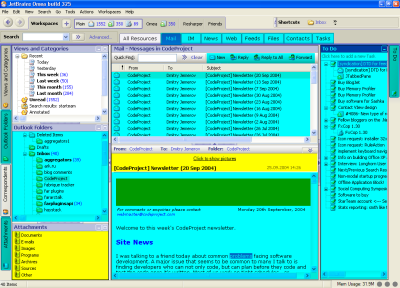
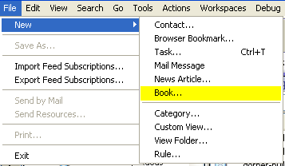
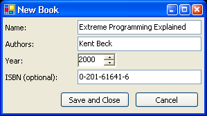
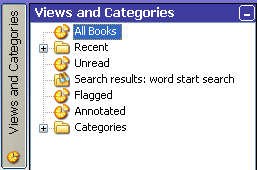

JetBrains Omea, a new family of products from JetBrains, is an Integrated Information Environment. Omea helps you manage your entire information lifecycle:
Omea supports a large array of information kinds (e-mails, local files, weblog posts, contacts, tasks and so on) out of the box. However, no company could hope to cover all existing kinds of digital information in its product - there are always more or less exotic kinds of information (for example, bug tracker requests) that would be convenient to work with inside Omea, but are not supported by the JetBrains developers. Because of that, Omea has been designed to be completely extensible, based on the plugin model. In fact, almost all of the standard resource types supported by Omea are implemented as plugins, and the majority of services used by our plugins are also available to third-party developers through our Open API.
The main advantage of developing Omea plugins is that, by spending a small effort to describe your resource type to Omea, you automatically get its entire range of information organization and search facilities for free. The user will be able to categorize resources of your type, add them to workspaces, build views which return them, link them to other resources and so on. It works the other way, too - if you (or we at JetBrains) develop a new tool for organizing resources, it will automatically apply to all standard resource types and all resource types provided by third-party plugins.
Another advantage is that Omea Reader, the version of Omea currently available as a free download, does not carry any restrictions on loading third-party plugins. Omea Reader has the full range of search and organization features and the full set of Open API interfaces.
Omea is a .NET application, and its plugins are regular .NET assemblies. Plugins can be developed in any .NET programming language. While this article discusses a sample developed in C#, we plan to provide sample plugins created with Visual Basic .NET, Delphi 8 and possibly other .NET development environments.
This article will describe the general features and possibilities provided by the Omea Open API, and then will discuss an implementation of a sample plugin that will help you manage your book collection. It will take you just an hour or two to follow the plugin development tutorial , and as a result, you will understand how to implement all the basic functions of a plugin, and will be able to start developing your own plugins.
There are two main kinds of plugins that can be developed for Omea. The first, simpler kind of plugins, does not add any new resource types to Omea, but rather extends the functionality of the existing ones. The most common way for doing that is registering new actions - commands available in the menus, toolbars and through keyboard shortcuts - which work on resources of the standard types.
The screenshot on the right shows a screenshot of an email with a selected text fragment. You can see that the actions shown in the menu have been provided by multiple plugins. The actions highlighted in yellow have been provided by the Outlook plugin, the "New Task..." action - by the Tasks plugin, and the last item, "Look Up in Dictionary", has been provided by the Dictionary plugin which is a sample supplied with the Omea Open API documentation. The remaining menu items belong to the Omea core.
As the Dictionary plugin demonstrates, you can implement small and useful pieces of functionality with very little effort, and you don't need to learn the entire Omea Open API in order to do that. In fact, if you only understand how to register actions in the Omea UI and how to work with resources, you'll be able to implement a major portion of the features which have been suggested as plugin ideas by Omea users.
The second kind of plugins, which is the main focus of this article, extends Omea with entirely new resource types. Plugins of that kind usually add a new resource type tab to the Omea window, with new panels in the sidebars. Of course, plugins of the second kind can also register actions which are required to work with the resources of the new type.
A plugin which adds a new resource type interacts very closely with Omea core. Many of the core features only work on the resources provided by the plugin if the plugin took steps to support them. Other features do not require plugin interaction, but can be extended by plugins.
In general, Omea strives to reduce the amount of work that must be done by a plugin developer by providing a standard UI framework which the plugin only fills with data. There are some parts of the user interface, like the controls for viewing and editing resources, that must be implemented by a plugin, but as the picture on the right shows, the amount of such UI is relatively small. The parts highlighted in yellow are the interface controls implemented by plugins (the Outlook plugin and the Tasks plugin). The cyan parts are controls implemented in Omea core which have been registered or filled with data by plugins.
Let us now go through the main features of Omea and discuss how they interact with plugins and how they can be extended.
Getting Resources into Omea. If the resources are created by the user, the plugin needs to provide the interface for creating and editing them. The standard resource editing window in Omea consists of a frame provided by the core (with the OK and Cancel buttons and the validation label) and an editing pane - a custom control implemented by the plugin.
If the resources get into the system automatically (imported from an external application or downloaded from the network), Omea provides a powerful set of asynchronous processing facilities that helps you write the downloading or import code.
Working with Resources. The minimum requirements for adding a resource type to Omea are:
Displaying Resource Lists. Plugins can display resource lists in regular (linear) or threaded mode. A plugin also has several possibilities to customize how resources of its type are displayed in a list. It can specify the columns that need to be shown by default, and their default width. It can customize the way property values are converted to text (for example, task statuses are internally stored as numbers but displayed as strings) and the way resources are compared (for example, the "Re:" prefix is ignored when the resource list is sorted by subject). If that is not sufficient, a plugin can register a handler to perform custom drawing and event handling for a column. An example of a custom-drawn column is the "Annotation" column.
Plugins also provide the icons used to display the resources in resource lists and other places in the program. The icon used for a resource can depend on its state. There is a very easy to use system for specifying the property values and icons associated with them in an XML file. If the possibilities of that system are not sufficient, custom code can be written to return resource icons.
Searching Resources. To make the resources of its type searchable, a plugin needs to be able to provide the contents of its resources as a series of plain-text fragments. Fragments can be grouped in several sections (for example, subject, body and annotation), and the user can restrict searching to a particular section. Text indexing in Omea is asynchronous - the plugin queues its resource to be indexed, and then some time later a callback is called to retrieve the resource text. The same callback is used to retrieve text fragments when contexts for search results are displayed.
Another responsibility of a plugin is highlighting the found words in the resource text. That functionality is implemented by the embedded Web browser, so there is no extra work required if it is used to display the resource contents.
Workspaces. Resources of any type not marked as internal can be added to a workspace, but plugin support may be needed to make this actually useful. For example, when an Outlook folder is added to the workspace, the e-mails in that folder must also become visible in the workspace, along with the attachments of those e-mails. This is handled by registering the resource type as workspace-aware and specifying the link types which connect the resource to other resources which it "pulls" with itself when it is added to the workspace.
Plugins also have a limited possibility to customize the user interface used to select which resources of a particular type should be shown in a workspace.
Categories, Flags and Annotations. These organization tools can be used on resources of any type which has not been marked as internal. Plugins can perform various operations with categories and automatically assign categories to resources. Plugins can also register additional flags and specify icons for them.
Views. A plugin can register conditions which can be used to construct views and build advanced search queries. In most cases, conditions do not require custom programming. For example, the "Task is not completed" condition is registered simply as "Value of the Status property for resources of type Task is less than 2". For conditions which cannot be expressed as simple operations on resources and their links (for example, the "Sent only to me" condition), it is possible to write a custom class which will be called to check which resources match the condition and whether a given resource is a match.
Plugins can also register views built of conditions - either standard ones or those provided by plugins.
Rules. Rules are never invoked automatically by the Omea core. If it makes sense to process resources of a plugin by rules, the plugin needs to invoke the rule processor explicitly at the appropriate time. Plugins can also implement custom rule actions which accept a resource and a set of action parameters (for example, the folder where a received e-mail should be moved). The UI for editing the action parameters is provided by the core.
Clippings. In order to support clippings, the plugin needs to be able to return the current selection as a plain-text, RTF or HTML string. If the selection is not empty, it can be turned into a clipping. The standard embedded Web browser supports the interface for returning the selected text, so if the plugin uses it to display resources, there is no extra work required to support clippings.
Sending Resources. If a plugin needs a simple form of sending its resources as regular text emails (for example, "Send by Email" for bookmarks), it can invoke the standard service for creating e-mails. In Omea Reader, the e-mail service is implemented through the Simple MAPI interface, and in Omea Pro it uses the Outlook integration. If sending resources as text is not sufficient (for example, for contacts and tasks), the plugin can implement an interface for serializing its resources to an XML representation and restoring from that representation. Then it becomes possible to send those resources by email through the "Send Resources" feature.
This article will discuss the main structure and responsibilities of a plugin which registers a new resource type. The example plugin discussed in the article is "Librarian" - a plugin which allows you to manage your book collection. It demonstrates a wide array of Omea interfaces that you will need to deal with when developing plugins, and at the same time does not involve any extra complexity related to integrating with external applications, protocols or data formats. The example implements only the bare minimum functionality, but you will be easily able to extend it if desired.
To create a new plugin in Visual Studio .NET, simply create a new project of type "Class Library" and add a reference to the OpenAPI.dll assembly from the Omea distribution. That assembly contains a set of classes and interfaces in the JetBrains.Omea.OpenAPI namespace which constitute the API available to the plugin developers. The documentation for the Open API is not included in the base Omea distribution and can be downloaded separately from our Web site.
In order for Omea to be able to load the plugin, it should implement the IPlugin
interface. The interface consists of three methods - Register(), Startup()
and Shutdown(). The plugin startup sequence is fully described in
the OpenAPI documentation; here we will simply note that Register()
is the first method called after a plugin has been loaded, and we will perform
all the initialization in that method.
All services provided by the Omea core can be accessed through the static
properties of the JetBrains.Omea.OpenAPI.Core class, which are
available all the time a plugin is running. For example, to create a new
resource, the method Core.ResourceStore.NewResource is used.
Complete documentation of interfaces available through the Core
class can be found in the Open API documentation.
After you have compiled the plugin for the first time, you'll need to add it
to the system registry, so that Omea will know that it should be loaded. On your
test machine you can use the "Add..." button in the Omea Plugins options page to
add a plugin, but it is better to create an installer for the plugin that will
add it to the registry automatically. The list of Omea plugins is stored in the
registry under Software\JetBrains\Omea\Plugins for Omea Pro and
under Software\JetBrains\Omea Reader\Plugins for Omea Reader. The
contents of these keys is scanned both for HKEY_LOCAL_MACHINE and HKEY_CURRENT_USER;
plugins from either key are loaded.
In order to understand which resource and property types will be needed by the plugin, we need to decide on our requirements first. To keep the example simple, we will store only the minimum required information about each book.
Our plugin will allow the user to create, edit and view books. For every book, the user will be able to enter its name, authors, the year it was published and, optionally, its ISBN (which will serve as the unique identifier for the book). Every book can have several authors, and every person can be the author of several books.
To make the most use of the core features of Omea, it is recommended to reuse
the resource and property types defined by the core and the standard plugins
whenever it makes sense. In our example, we will need to create a new resource
type to represent books (because that's the whole point of our plugin, after
all). On the other hand, we do not need to create a separate resource type to
represent book authors - we can reuse the standard Contact
resource type to represent them. The openness of the Omea data model allows us
to add any extra properties and links to Contact resources if we
need to.
To represent the name of the book, we can also reuse an existing property
type - Name, which is a string property type with no special
features, and suits us just fine. We could represent the publication date of the
book with the standard date property type Date, but it does not
fit us quite well. It is usually not important to know the exact publication
date of the book, and asking the user to enter that information will be an extra
burden. Thus, we will create a new integer property type to represent the
publication year. The ISBN will also be represented by a new string property
type.
We will also define a new link type to represent the connection between a book and its authors. There is no inherent order for that connection, so we will not use a directed link type - the link will be completely symmetric.
To make sure the resource and property types defined by a third-party plugin
do not conflict with the types defined by the Omea core or other third-party
plugins, it is strongly recommended to use a prefix consisting of your company
name and plugin name for every defined type. For example, our book resource type
is called JetBrains.Librarian.Book, and the ISBN property type is JetBrains.Librarian.ISBN.
The resource and property types defined by the Omea core do not have any dotted
prefix. Display names are registered for the resource and property types, so
that the user will see friendly-looking names, without any dotted prefixes.
The registration code for the resource and property types, along with the
accessors for the registered property type IDs, is found in the classes
PropTypes and
ResourceTypes. Because the display name templates of some resource
types may reference property types defined in the plugin, we register all
property types before registering all resource types.
Note that the registration of resource and property types is completely
separate - we do not need to tell Omea which properties we are going to use for
the Book resource type. Any property can be applied to any
resource type. However, to ensure data consistency, we register a link
restriction specifying that the BookAuthor link of a book must
point to a resource of type Contact. We could also specify
restrictions on the link count (for example, specify that a book must have at
least one author), but we want to allow the users to create books with unknown
authors, so we don't restrict the link count.
The unique restriction on the ISBN property guarantees
that the values of ISBN will be unique among all books. There can
be any number of books for which the ISBN property is not defined,
but if it is defined, there may exist no other Book resource with
the same value of ISBN.
Before we can proceed to implement any functionality for processing books, we
need to be able to create Book resources. We could start by
writing some code that will create book instances for testing, but in order to
keep the sample shorter, we will develop the real user interface for creating
books right away.
First of all, we need to create the class that will implement the book creation action. Invoking the action will open a nonmodal window where the user can enter the details of the book and click "Save" to complete the book creation process. The action does not depend on the selected resources or any other context, so we can make it available all the time.
All action classes need to implement the IAction interface,
with two methods - Execute, which performs the action, and Update,
which updates the state of the action. Because our action is always enabled, we
don't need to do anything in the Update method. Therefore, we can
inherit from SimpleAction, which provides a default empty
implementation of Update, and only implement the Execute
method. We will place the stub of the action implementation in the NewBookAction
class.
Before proceeding to implement the action, let's register it so that we can see it in the Omea user interface. The "File / New" submenu of the main menu contains several commands for creating new resources, so this looks like a right place for our action.
The placement of menu items, submenus and separators in the main menu is
defined by action groups. An action group is a sequence of related
actions which can be delimited from other action groups by a separator or placed
in a submenu. The relative position of action groups, and of actions within an
action group, is specified by list anchors. A list anchor (an instance of
the ListAnchor class) specifies that an action or group should be
placed first in the list (ListAnchor.First), last in the list (ListAnchor.Last),
before or after another action or group.
We will add our action to the FileNewActions group, which is
one of the action groups comprising the File / New submenu. We don't need any
special positioning for the action, so we'll go with ListAnchor.Last.
If you run the plugin now, the "Book..." action will appear under "File / New...", but nothing will happen when you click it.
To implement the book creation action, we will use the resource editing framework provided by Omea. The interface we will get as a result will be very similar to the interfaces for editing contacts and tasks in the standard Omea.
The standard resource editing window consists of two main parts: the frame
with buttons and the validation label, provided by Omea, and the edit pane,
which implements the resource type-specific editing interface. The edit pane is
a UserControl derived from the AbstractEditPane base class. The
frame is created when the resource to edit and the instance of the pane are
passed to Core.UIManager.OpenResourceEditWindow().
For common tasks, only two methods of AbstractEditPane need to
be overridden. The method EditResource() shows the values of
properties of the specified resource in the user interface controls. The method
Save()
saves the data from the controls to the resource properties.
An important point for development of resource edit windows is the
requirement to perform all operations which create or modify resources in the
resource thread. This allows to serialize resource modification operations
and greatly reduces the possibility of deadlocks and modification conflicts. The
simplest way to marshal a resource write operation to the correct thread is to
use the ResourceProxy class. An instance of the class is created
in any thread, either attached to an existing resource or marked to create a new
resource of the specified type. Then it accumulates the changes that need to be
performed to the resource. The modifications are executed in the resource thread
either synchronously (if the EndUpdate() method is used) or
asynchronously (EndUpdateAsync()).
However, if you study the example code closely, you will note that
NewBookAction
creates a new resource directly from the main (user interface) thread. This is
actually not an error, because the method used to create the resource is NewResourceTransient().
That method creates a transient resource - a resource which exists only
in the memory. If the resource needs to be actually saved (and not simply
discarded for some reason), saving of the resource needs to be performed in the
resource thread. This is done by running the IResource.EndUpdate
method as a job in the resource thread, through Core.ResourceAP.RunJob.
(The details of that can be found in the help file.)
In order to keep the user interface simple, we will implement editing the
author list as a simple text string, containing a list of author names separated
with commas. When the edit form is opened, we get all the links from a book to
its authors and concatenate their names into a string which is shown in the edit
box. The saving process is harder: we need to create the actual Contact
resources to represent the authors and link them to the book resource. Thus,
saving the book data will require modification of more than one resource, and it
will be easier not to use ResourceProxy but to run the entire
saving operation as a single method in the resource thread.
To create the contact resources, we use the system-provided IContactManager
interface. It contains fairly complicated logic for parsing a single contact
name string into components and for finding duplicate contacts, so we can simply
give it a text string, and it will return an IContact (a wrapper
around a contact resource) containing either a new contact or an existing
contact with the same name. The only thing that remains for us to do is link the
returned contact to the book resource.
Now we have the possibility to create books but there is no way to see the books we've created. Two things are required for us to see the books: a view where we can see the list of books and the UserControl to display the actual book contents.
To keep things simple, the initial version of the sample plugin will only have one view to show the books - the "All Books" view. We will demonstrate how to register a tab where the view appears and how to register the view itself.
The tab is registered with one simple call:
Core.TabManager.RegisterResourceTypeTab( "Books", "Books", _resBook, 20 );
We specify the ID and the display name of the tab, the type of resources shown
in the tab and the index of the tab related to other tabs. The standard tabs,
except for Tasks, have indexes between 0 and 10, and the Tasks tab has the index
of 99. Thus, the index 20 places us after all the standard tabs but before
Tasks.
After we register a tab, we get the standard Views and Categories pane and not much else. Books by default don't have any properties which are used for filtering by standard views (like date or annotation), so the views will initially be empty. However, we can easily add the view to display the list of all books.
In order for the "Restore Default Views" feature to work correctly for the
plugin views, views should not be registered directly from the Register() or
Startup() method of the plugin. Instead, the plugin should contain an
implementation of the IViewsConstructor interface, register that implementation
in the Register() method, and perform the views registration.
If you start the plugin now, you will see that the "All Books" view appears in the "Books" tab, and the books you create are shown in that view, but the preview pane is empty when you select a book resource. In order for the resource to be displayed, we need to provide a display pane implementation.
To understand how to implement the display pane, we need to understand the
lifecycle of the display panes first. Each plugin which needs to display
resources registers an implementation of IResourceDisplayer class, which
basically serves as a factory for display panes. When Omea needs to display a
resource, it locates a plugin which has registered a resource displayer for the
required resource type and calls its CreateDisplayPane() method. The method
returns a class which implements the IDisplayPane interface. Omea then embeds
the control returned by IDisplayPane.GetControl() into the resource browser and
calls IDisplayPane.DisplayResource() to get the resource displayed.
As the user switches between the resources of the same type, Omea continues
to use the same display pane instance. It calls EndDisplayResource() before the
user switches to a different resource and then DisplayResource() again to get
the new resource displayed. If the user switches to a resource of a different
type, the display pane is disposed. This is done by calling EndDisplayResource()
for the last time, followed by a call to DisposePane(). The DisposePane()
implementation usually disposes of the UserControl which was used to display the
resource.
In our sample we will follow the common pattern and keep the
IResourceDisplayer implementation in the same class which implements IPlugin.
The IDisplayPane interface will be implemented by the user control which is used
to display the books.
The actual IDisplayPane implementation is pretty much trivial. The only
method that contains real code is
DisplayResource(). All the others would be
needed if we wanted to implement more complex functionality - for example,
selection and copy/paste, watching resource changes or highlighting search
results.
Making it possible for the user to search the plugin resources requires two main tasks from the plugin developer:
The main decisions that need to be made when implementing the text provider
are: which of the resource properties should be searchable, and in what sections
should the properties be divided. In our plugin, we want the user to be able to
find a book if she enters its name, author or ISBN. The available sections can
be seen in the Advanced Search dialog; the names of the predefined sections are
available as constants in the DocumentSection class.
Our implementation will put the book name
in the Subject/Heading section, the book authors in the Source/From section
(which is also used for e-mail sender names, for example), and the ISBN will be
treated as regular body text.
The indexing requests should be sent every time when the searchable content
of the resource is changed. Our plugin has only one place where books can be
changed, which is the Save handler of the book edit pane. That's where we will
put the indexing request, which is performed by a call to Core.TextIndexManager.QueryIndexing.
Now we can create and view books, but there are two more operations that are critical for the plugin to be of any use: editing and deleting books.
Let's start with editing. We already have the main piece required to support
editing: the edit pane. What we still need is the action to invoke the editing
and the code in the EditResource
method to fill the edit pane with the values of the properties from the
edited book.
The edit book action is even simpler than the new book action. The only
difference is that the edit book action is not always enabled - we need to know
which book needs to be edited. Fortunately, there is a standard base class ActionOnSingleResource which covers one of our enabled requirements: one and
only one resource must be selected. The other requirement - specifying that the
selected resource must be a book - will be covered by specifying the resource
type in the action registration calls. We will provide the user with two ways to
invoke the action: double-clicking the book or right-clicking it and selecting
"Edit" from the context menu.
The delete book action is also fairly simple: since the book does not have
any complex connections, we can simply delete the book resource, and the system
will handle deleting the links from it to other resources. One thing to note is
that the action supports multiselection, so we need to loop through all selected
resources instead of acting on the first one. Another is that, in order to
improve UI responsiveness, the resources are deleted asynchronously.
ResourceProxy is used to queue the deletions to the resource thread.
Registration of the delete book action is more interesting, though. The system already has several UI elements for the "Delete" action (a menu item in the Edit menu, a button on the toolbar, the Del key shortcut), and we want to apply all of them to our resource, instead of, for example, adding a new menu item "Delete Book" next to the "Delete" item. This is handled through composite actions. A composite action is an action which contains a single UI presentation but multiple implementations provided by different plugins. The specific implementation to be executed is selected based on the action context (active tab, type of the selected resources and so on). The plugin registers an action component, which references the composite ID ("Delete" in our case) and fits into all the composite actions (menu, keyboard and so on) which share the same composite ID.
We have now seen all the basic steps required to implement a plugin which defines a new resource type. The features which have been implemented are: creating, viewing, editing, searching and deleting books.
There are many more things we could have covered, including sidebar pane registration, resource icons, workspace integration and more. We will leave all that for the second part of the tutorial. And for now - feel free to explore the API, and don't hesitate to ask questions by e-mail or in the Omea newsgroups!
{kind=link}
{kind=link}
{kind=link}
{kind=link}